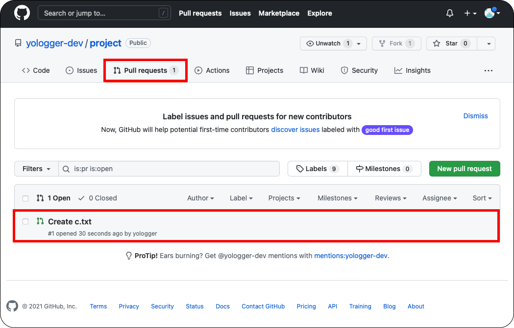

[Git, GitHub] (7) Pull Request
Pull Request
GitHub의 Pull Request를 사용하면 효율적으로 협업할 수 있다. Pull Request는 보통 다음과 같은 순서로 진행된다.
- 원본 저장소를 Fork한다.
- Fork한 저장소를 Clone한다.
- Clone한 프로젝트에서 새로운 브랜치를 생성한다.
- 새로운 브랜치에서 작업하고 Fork한 저장소에 Push한다.
- Fork한 저장소에서 Pull Request 버튼을 누른다.
이제 예제를 살펴보자.
예제에서 yologger-dev계정은 원본 저장소의 Owner다.yologger계정은 원본 저장소를 Fork하여 수정하는 Contributer다.
(1) fork
Contributer는 원본 저장소를 자신의 저장소로 Fork한다.
Fork를 하면 Contributer의 저장소에도 동일한 프로젝트가 생성된다.
(2) clone
Fork한 저장소를 clone한다.
1 | $ mkdir project |
(3) remote 저장소 설정
clone한 프로젝트(Fork한 프로젝트)와 연결된 원격 저장소를 확인해보자.
1 | $ git remote --v |
origin은 원본 저장소가 아닌 Fork한 저장소와의 연결이다. Pull Request를 사용하려면 원본 저장소와의 연결을 추가해야한다.
1 | // 원본 저장소와의 연결 추가 |
1 | $ git remote -v |
(4) Branch 생성
이제 작업을 하기 위해 새로운 브랜치를 생성해야한다. develop 브랜치를 생성하자.
1 | // 'develop' 브랜치 생성 |
(5) 작업 수행 후 add, commit
develop브랜치에서 c.txt를 추가하자.
1 | $ vim c.txt |
그리고 add, commit 한다.
1 | $ git add -am "Create c.txt" |
(6) push
원본 원격 저장소가 아니라 Fork한 원격 저장소에 Push한다.
1 | // 저장소 확인 |
(7) Pull Request 보내기
Contributer의 Fork 원격 저장소에 Compare & pull request 버튼이 활성화된다. 이 버튼을 클릭하자
코멘트를 남기고 Create pull request 버튼을 클릭하면 Pull Request가 전송된다.
(8) Pull Request 승인 / 거절하기
Owner는 Pull Request를 확인할 수 있다.

원본 저장소 주인 역시 코멘트를 남길 수 있다. 보통 이 단계에서 Code Review를 진행한다.
문제가 없으면 Merge pull request를 눌러 Merge한다. 물론 문제가 있다면 Reject할 수도 있다.
(9) Fork한 원격 저장소 업데이트
Owner가 Merge를 승인하면 Contribute도 Fork한 저장소를 업데이트할 수 있다. Fetch upstream을 누른 후 Fetch and merge버튼을 클릭하면 된다.
Fork한 저장소가 업데이트된 것을 확인할 수 있다.
(10) 로컬 저장소 업데이트
이제 원격 저장소를 pull하여 로컬 저장소의 main브랜치를 업데이트한다.
1 | // 'main' 브랜치로 이동 |
다 사용한 develop브랜치는 삭제한다.
1 | $ git branch |
로컬 저장소의 main브랜치를 확인해보자.
1 | $ ls |
로컬 저장소의 main브랜치에도 변경이 반영되어있다.